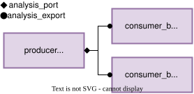
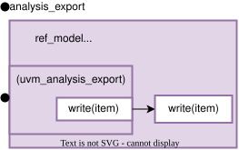
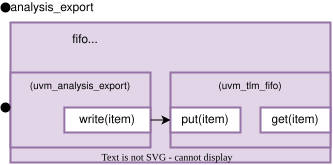

TLM Analysis Ports and Exports
Transaction-level modeling (TLM) ports and exports are used to send transaction objects between different parts of the testbench. Analysis ports are used to broadcast transactions between monitors, the reference model and scoreboard.
An analysis connection has two ends:
An analysis port initiates the
write()call.An analysis export receives the
write()call and provides its implementation.
But importantly, each analysis port can connect to an arbitrary number of
exports. So the analysis port to export connection is a one to many, as can be
seen in Fig. 3. The connection between a port and export is made in
connect_phase().


Fig. 3 An analysis port connection. One analysis port can connect to many analysis exports.
Analysis Port and Export in PyUVM
An analysis port is created with:
self.analysis_port = uvm_analysis_port(
name = f"{self.get_name()}_analysis_port",
parent = self,
)
There is typically no need to utilize the factory for analysis ports or exports, as they are never the target of a override.
An analysis port has the method: write(item), which calls the
write(item) methods of all connected exports. Calling write() when the
port has no connections is valid, but no component receives the transaction.
write() only passes a reference to the transaction items. If the originally
item is altered all other components will see this changes. Therefore its best
to clone the item when received using the clone().
To connect a port to an export in the connect_phase(), the
connect(export) method is used. The export passed to connect()
needs to implement write().
def connect_phase(self):
self.producer.analysis_port.connect(self.ref_model.analysis_export)
Classes with Build-In Analysis Ports/Exports
Some UVM classes have build in ananlysis ports/exports, two are described here:
uvm_subscriberuvm_tlm_analysis_fifo
UVM Subscriber
uvm_subscriber is the base class for components that receive transactions
from an analysis_port. It creates an analysis_export automatically when
the subscriber is constructed.
The subscriber’s analysis export always calls the subclass’s write()
method.


Fig. 4 uvm_subscriber provides analysis_export, which calls the subclass’s
write() method.
Every uvm_subscriber subclass must override this method:
class ref_model(uvm_subscriber):
def write(self, item):
# Process item here.
pass
TLM analysis FIFO
uvm_tlm_analysis_fifo is a FIFO with an analysis export. It receives a
transaction through analysis_export.write(item) and stores the transaction
in its queue.
self.fifo = uvm_tlm_analysis_fifo(
name = "fifo",
parent = self,
)
The FIFO exposes analysis_export for an analysis-port connection. The
transactions are retrived from the FIFO using the get() mehtod.
get() waits until an item is available and removes that item from the
FIFO.
item = await self.fifo.get()


Fig. 5 analysis_export appends transactions to the analysis FIFO queue.